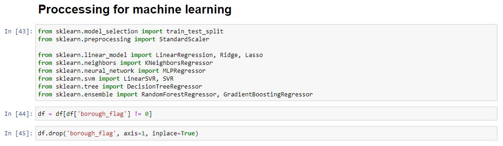
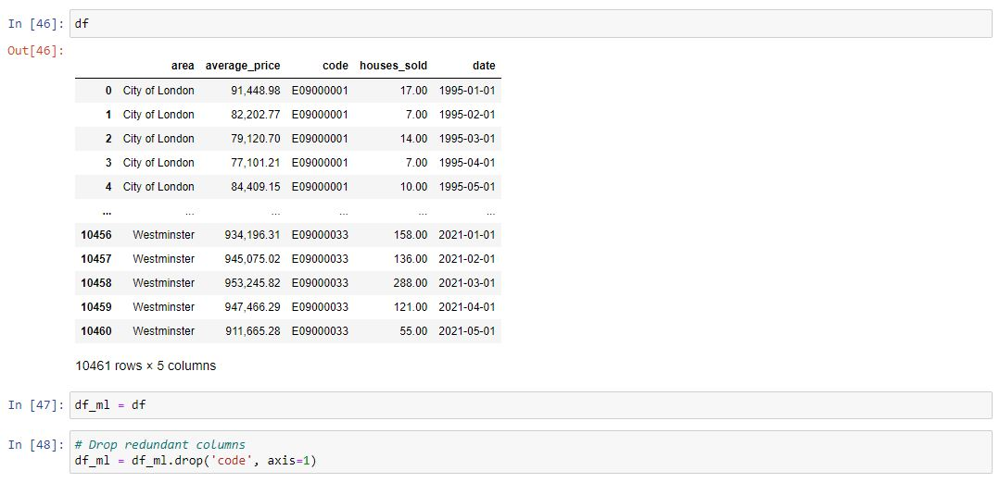
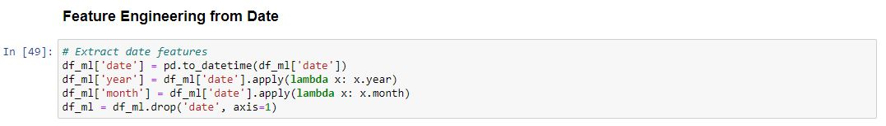
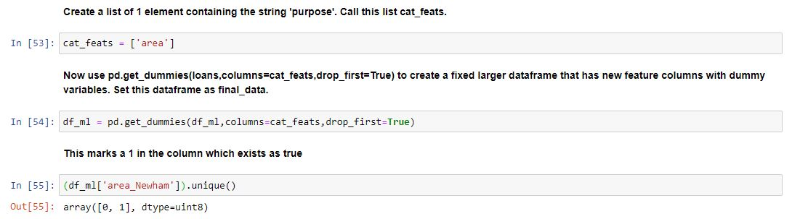
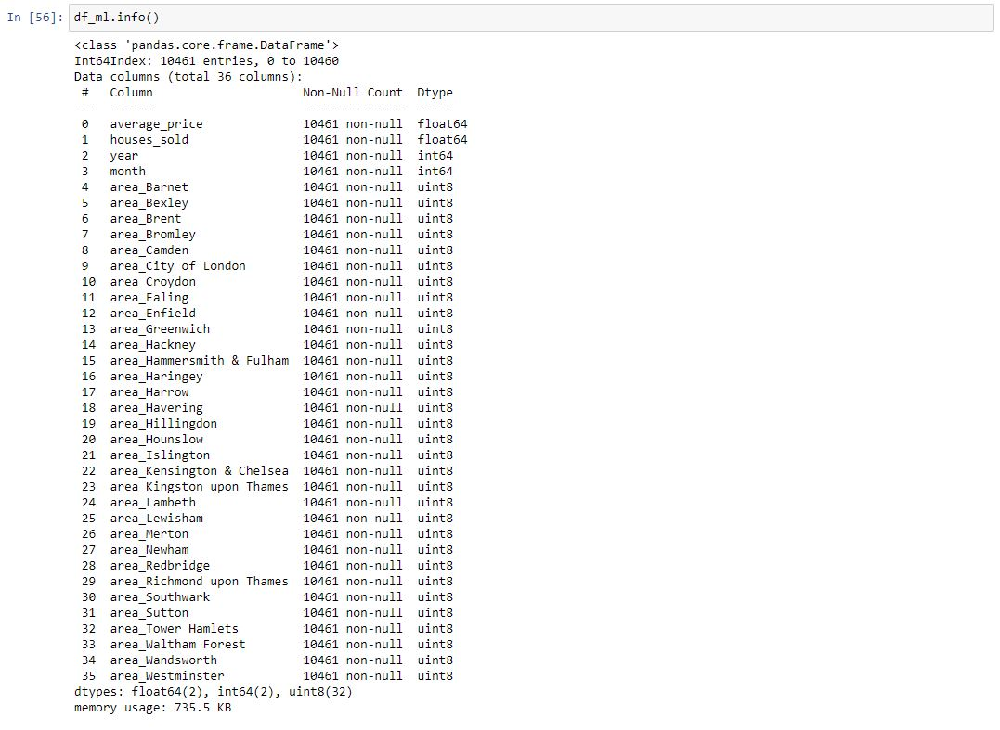

As always importing the modules we know we will need now will happen first. There are different approaches to this being importing the modules as we need them or just grouping them together like this. I find it easier, in most instances, to group them in one place so someone coming into the code can easily see the sort of thing they are likely to expect throughout the script. They will also be able to install any modules which they do not already have.
We will focus on our monthly data first. Instead of being selective about our columns in our models we can just drop the ones which are redundant now.
Our data now looks like this (below). We will make a copy of our DataFrame so that we can change it without altering the original dataset. There is also one more column to drop. This is the code column. Essentially it repeats the area column but does not tell us what is going on in our data without cross-referencing this to corresponding vales.
We shall turn our data in year and month columns so that it is easily interpretable by our model. This also allows some insights we demonstrated earlier in our EDA.
Notice that the area column as categorical
That means we need to transform them using dummy variables so sklearn will be able to understand them. Let's do this in one clean step using pd.get_dummies.
Let's show you a way of dealing with these columns that can be expanded to multiple categorical features if necessary.
Create a list of 1 element containing the string 'purpose'. Call this list cat_feats.
Our areas are now turned into columns with a one representing TRUE.
